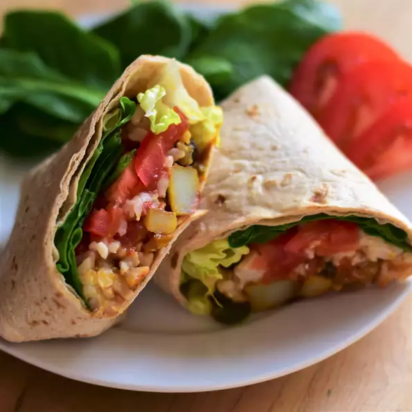

Vegan burritos forever recipe

Desciption on this magnificent burrito god
Way better than Moe's! These vegan burritos are easy to make and delicious!
Want to know how to make them! Ingredients
- 2 1/4 cups water
- 1 cup uncooked brown rice
- Lots of other things wink wink
Time for STEPS
- Preheat the oven to 350 degrees F (175 degrees C). Grease a baking sheet.
- Bring water and brown rice to a boil in a saucepan. Stir in diced tomatoes with chile peppers. Reduce heat to medium-low, cover, and simmer until rice is tender and liquid has been absorbed, about 50 minutes.
- While rice is cooking, mix cumin, turmeric, basil, garlic powder, salt, pepper, and seasoned salt together in a large bowl. Add olive oil. Toss potatoes in the mixture until well coated. Lay potatoes in a single layer on the prepared baking sheet.
- Bake in the preheated oven until fork-tender, 15 to 30 minutes, depending on the size of the cubes, checking halfway through cooking time and flipping over as needed.
- While potatoes are cooking, heat a skillet over medium heat. Saute bell pepper and onion in the hot pan until softened, about 5 minutes. Add garlic and cook for 1 minute. Remove from heat and set aside.
- Heat black beans in a saucepan over medium-low heat until hot, 2 to 3 minutes. Keep warm.
- Meanwhile, heat tortillas in a separate skillet over low heat until warm, 1 to 2 minutes, or according to package instructions.
- Lay out tortillas and fill as desired with cooked rice, beans, potatoes, pepper-onion mixture, spinach, romaine lettuce, and salsa as desired. Wrap up into burritos and serve.